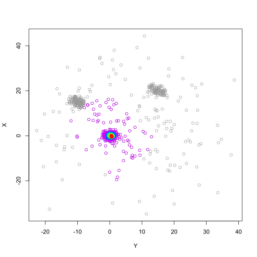

Recursive estimate of central location based on depth measures (from the
packages
depth and
ddalpha)
or convex body minimizers (package
MASS).
median_rec( data, method = "Projection", alpha = 0.5, maxIterations = NULL, warnings = FALSE )
| data | Matrix of numerical values containing the observations (one per row, with two columns for X and Y coordinates) |
|---|---|
| method | Method to use. Valid options are "MCD" and "MVE" for convex body minimizers, or "L2", "Lui", "Mahalanobis", "Oja", "Projection" (default), "Spatial" and "Tukey" for depth functions |
| alpha | Proportion of samples trimmed at each iteration (numerical value between 0 and 1, default: 0.5) |
| maxIterations | Set to a positive integer to limit the number of iterations, to NULL or 0 (default) for no limits |
| warnings | Logical value, to display the warnings and error raised by the underlying functions |
The function returns an S3 object of type BRIL.MedianRec,
containing the following values:
medianCoordinate of the recursive median
maxCoordinate of the sample with the highest depth (or the center of the first iteration in the case of convex body minimizers)
iterationsList containing the indices from the samples of data
selected at each iteration
# Illustrative data XY <- rbind( mvtnorm::rmvnorm(300, c(0, 0), diag(2)), mvtnorm::rmvnorm(100, c(15, 20), diag(2) * 3 - 1), mvtnorm::rmvnorm(150, c(-10, 15), diag(2) * 2 - 0.5), mvtnorm::rmvnorm(200, c(5, 5), diag(2) * 200) ) # Compute the recursive median res <- median_rec(XY) print(res)#> #> => Results for median_rec() using "Projection" method (alpha=0.50) #> (750 samples, 9 iterations) #> #> Recursive median (median): #> [1] 0.4971306 -0.3703380 #> #> Sample median (max): #> [1] 0.2865685 1.5814283 #>